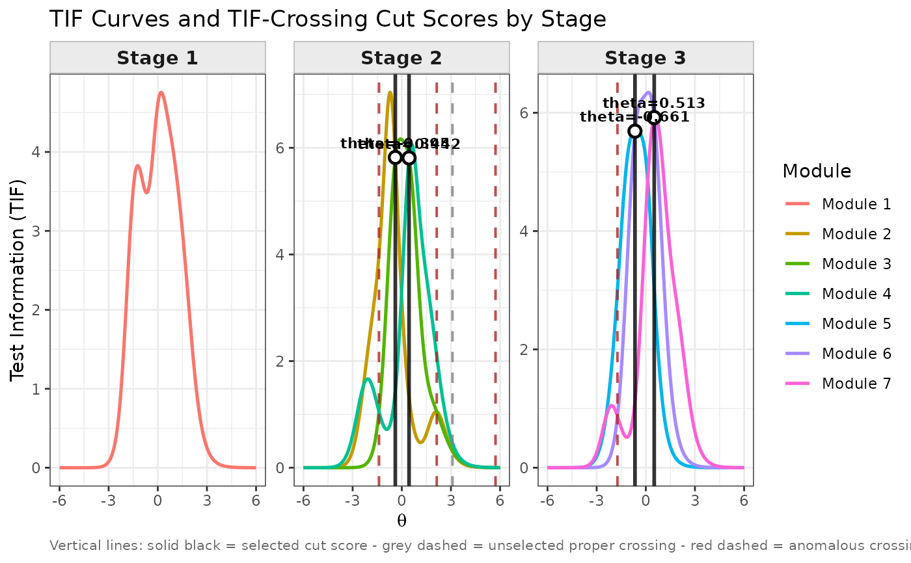
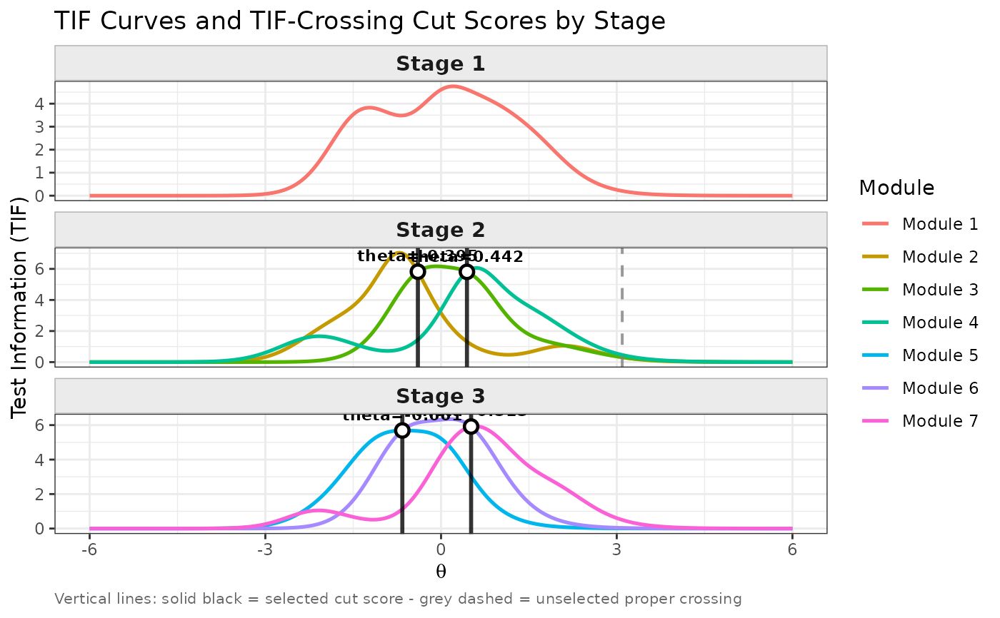

Produces a ggplot2 visualisation of the Test Information Function
(TIF) curves for each module, faceted by stage, with vertical lines marking
the selected cut scores (proper TIF crossings) and, optionally, any
anomalous crossings detected by find_cut.
Each stage occupies one panel. Stage 1 (routing module) appears first. Stages with routing decisions show TIF curves for all candidate modules and mark the selected cut score(s) with a solid black vertical line and a theta value label at the crossing point.
Arguments
- x
An object of class
"find_cut"returned byfind_cut.- theta_range
A numeric vector of length 2 specifying the theta range shown on the x-axis. Defaults to the full range stored in
x$tif_data.- show_anomalous
Logical. If
TRUE(default), anomalous TIF crossings (negative-slope crossings excluded from the cut scores) are shown as dashed red vertical lines.- label_cuts
Logical. If
TRUE(default), each selected cut score is annotated with its theta value above the crossing point.- layout
Character string controlling the panel arrangement.
"vertical"(default) stacks each stage in its own row (one column of panels, stage 1 at the top)."horizontal"places each stage in its own column (one row of panels, stage 1 at the left).- ...
Currently unused. Reserved for future arguments.
Value
A ggplot object. The object is printed automatically when
called interactively. It can be further customised with standard
ggplot2 functions such as ggplot2::theme(),
ggplot2::scale_color_manual(), etc.
Examples
## Use the built-in simMST 1-3-3 panel
cut_result <- find_cut(
x = simMST$item_bank,
module = simMST$module,
route_map = simMST$route_map
)
#> Warning: Stage 2: difficulty order of modules does not match their index order.
#> Ascending index order : modules 2, 3, 4
#> Ascending difficulty order: modules 2, 4, 3 (mean locations: -0.731, 0.128, 0.134)
#> run_mst() routes by ascending module index (rank 1 -> lowest index).
#> If index order differs from difficulty order, cut-score routing may
#> not produce the intended module assignments.
#> Consider redesigning the panel so that easier modules have lower indices.
#> Warning: Stage 2, pair (module 2 vs module 3): 2 proper crossings found at theta = [-0.3955, 3.0936].
#> Selecting the crossing closest to ref_theta = 0.0000: theta = -0.3955.
#> To override the selection, specify a different 'ref_theta'.
## Default: stages stacked vertically (stage 1 at the top)
plot(cut_result)
 ## Horizontal layout: stages side by side
plot(cut_result, layout = "horizontal")
## Horizontal layout: stages side by side
plot(cut_result, layout = "horizontal")

## Hide anomalous crossing markers
plot(cut_result, show_anomalous = FALSE)
